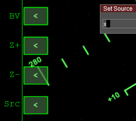
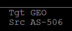
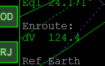
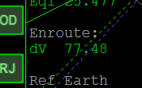
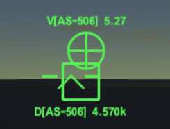

AMSO アポロ11号チュートリアル Part6 （軌道修正と再突入）
軌道修正
史実のアポロ11号では、復路に1回だけ軌道修正を実行しました。
ですが、BaseApproachプログラムの軌道予測は誤差が大きいため、何度か軌道修正を繰り返す必要があります。
TEIの噴射が終わったら、タイムワープ早送りで月から離れる。
月の重力圏を出るのを待つ。
参照：Orbiterチュートリアル Part13 月基地への軌道修正 2回目
月の重力圏を出たら、BaseApproachに戻る。（Orbit Ejectはもう使わない）
Srcをクリックしてxと入力する。

SrcがMoonからAS-506（アポロ11号）に切り替わる。

左下のEnroute: dVの数字に注目する。

タイムワープで時間を進めて、この数字が小さくなるのを確認する。

それ以上小さくならないようになったら、ABをクリック。
自動で軌道修正が実行される。
地球の重力圏に入ってから、そして地球に接近してから（目安としてはG 0.90）、ふたたび軌道修正する。
合計で3回軌道修正する。
余裕があれば回数を増やしてもよい。
再突入
高度が3300km(3.3M)になったら、Jを押してCSMを分離する。
分離したらRetrogradeオートパイロットを使うか、テンキーEnterを押して後ろを向く。※
再突入が終わったら、カプセルがパラシュートを自動で展開して着水する。
※テンキーEnterを使うと、RCSを使って姿勢を制御できます。
クルーの回収
ヘリに乗る
宇宙船が着水すると、近くの海上に空母が出現します。
- Mで宇宙船から空母に切り替える
- Jでヘリを出現させる
- Mでヘリに乗る
- Jでヘリのエンジンを始動する
ヘリの操作は、着陸船の手動操縦とほぼ同じです。
| InsertorDelete | 上昇・降下 |
| End | ホバリングする |
| テンキー or フライトスティック | 姿勢を変更して移動する |
| G | ランディングギアを格納する |
乗員を回収する
Docking HUDを使うと、宇宙船の位置を確認できます。

宇宙船の上空に到達したら、乗員を回収する。
高度が高すぎると回収できないので注意すること。
| D | ドアを開く・閉じる |
| K | カゴを外に出す・収容する |
| K | カゴを降ろす・引き上げる |
| K | カゴ・ヘリに飛行士を乗せる |
全員を収容したら、空母に戻る。
着艦したらJでエンジンを切る。
エンジンが止まったら、ドアを開ける。
Kで宇宙飛行士を降ろす。
これでアポロ11号のミッションは完了です。